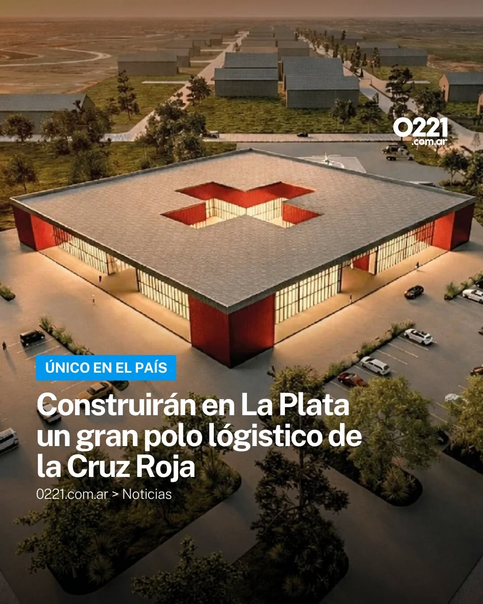

Nuestros Proyectos
La Cruz Roja impulsa proyectos a largo plazo destinados a fortalecer la resiliencia de las comunidades. Estas iniciativas incluyen programas de educación en primeros auxilios, promoción de hábitos saludables, preparación ante desastres, apoyo a poblaciones vulnerables y formación de nuevos voluntarios. El objetivo es generar un impacto duradero y contribuir al bienestar de la sociedad
Proyecto de Polo Logistico de Cruz Roja en La Plata
La Cruz Roja impulsa el proyecto de un nuevo polo logístico en la ciudad de La Plata con el objetivo de fortalecer su capacidad de respuesta ante emergencias. Este centro permitirá optimizar el almacenamiento y la distribución de insumos humanitarios, facilitando una asistencia más rápida y eficiente a las comunidades que lo necesiten.
